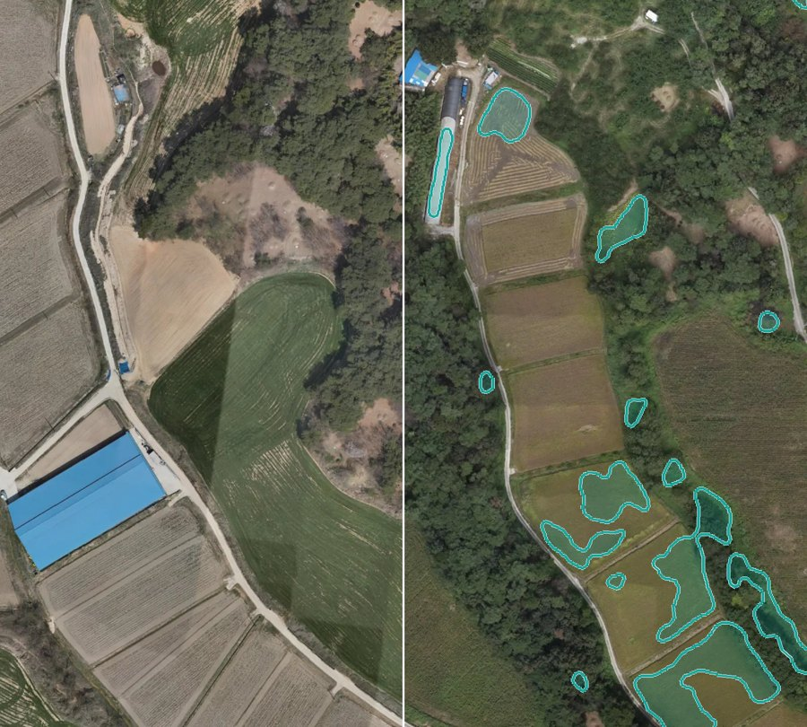

한눈에
18:23 기준5오늘 할 일기관 요청 1 · 프로젝트 4
4내 프로젝트모두 서비스 운영 중
2+ 시범 적용 5운영 중 서비스적용 지역 12곳
3다시 학습할 서비스영상 없는 지역 4곳
할 일 목록
5 · 오늘 끝낸 것 0프로젝트- 남원시 농정과 검토 요청에 답하기운봉읍 준향리 824-9 · 영농관리 행정서비스 · 18:08 받음답하기
 비닐하우스 2026 — AI 결과 맞는지 보기표본 20건 중 0건 봄 · 증평군 · 함양군 · 남원시보러 가기
비닐하우스 2026 — AI 결과 맞는지 보기표본 20건 중 0건 봄 · 증평군 · 함양군 · 남원시보러 가기- 건축물 2026 — AI 결과 맞는지 보기표본 20건 중 0건 봄 · 원주시보러 가기
- 주차장 2026 — AI 결과 맞는지 보기표본 20건 중 0건 봄 · 여주시 · 천안시 서북구보러 가기
- 곤포사일리지 2026 — AI 결과 맞는지 보기표본 20건 중 0건 봄 · 보령시보러 가기
최근 활동
12:01건축물 천안시 서북구 결과 갱신
어제 20:57모델 학습 끝남
어제 20:16건축물 원주시 결과 갱신
서비스 카드
운영 중 2 · 시범 적용 5서비스 카드 영농관리 행정서비스남원시 외 5곳 · 기관 검토 요청 107건 · 다시 학습 필요운영 중
영농관리 행정서비스남원시 외 5곳 · 기관 검토 요청 107건 · 다시 학습 필요운영 중 해양쓰레기 실태조사 서비스여수시운영 중
해양쓰레기 실태조사 서비스여수시운영 중 비닐하우스 서비스증평군 외 2곳시범 적용
비닐하우스 서비스증평군 외 2곳시범 적용
국토 변화 탐지 서비스남원시시범 적용
바로 분석하기
카드 고르기시군구 검색분석하기